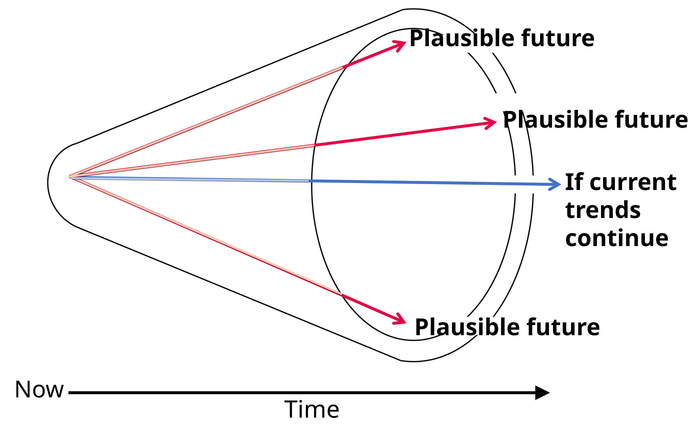

Futures Toolkit
Un conjunto de herramientas para desarrollar políticas y estrategias robustas frente a un futuro incierto
Esta es una traducción no oficial al español, hecha para fines personales y académicos. No ha sido revisada ni respaldada por la Government Office for Science del Reino Unido. Ante cualquier diferencia, prevalece el texto original en inglés.
Fuente original: Government Office for Science. (2024). The Futures Toolkit (2.ª ed.). Elaborado en colaboración con SAMI Consulting. Gobierno del Reino Unido. https://www.gov.uk/government/publications/futures-toolkit-for-policy-makers-and-analysts/the-futures-toolkit-html
Licencia: © Crown copyright 2024. El original se publica bajo la Open Government Licence v3.0, que permite copiar, adaptar y traducir el contenido citando la fuente.
Las figuras se reproducen del original y conservan sus textos en inglés; debajo de cada una se incluye su descripción traducida.
Un conjunto de herramientas para ayudarle a desarrollar políticas y estrategias que sean robustas frente a un futuro incierto.
Elaborado en colaboración con SAMI Consulting.
Versión de 2024.
Documento original en PDF
A continuación se inserta el documento original en inglés (Futures Toolkit, Edition 2, 117 páginas), tal como lo publica el Gobierno del Reino Unido. También puede descargarlo aquí o desde su ubicación original.
Acerca de la caja de herramientas
La Futures Toolkit lo guía a través de 12 herramientas distintas de pensamiento de futuros, con consejos sobre cómo aplicarlas. También las agrupa en varias rutas para cumplir objetivos específicos.
La caja de herramientas pretende ser accesible para personas con poca o ninguna experiencia en el uso de estas herramientas, servir como referencia útil para quienes tienen más experiencia y como guía para quienes encargan proyectos de futuros. Complementa otros recursos de futuros de GO-Science, entre ellos nuestra Breve guía de pensamiento de futuros y prospectiva y nuestro Trend Deck (catálogo de tendencias).
Nos centramos en cómo pueden aplicarse estas herramientas a las políticas o a la estrategia, pero pueden usarse en muchos otros ámbitos, incluidos contextos más operativos o centrados en la ejecución.
Introducción
Las herramientas
¿QUÉ está cambiando?
¿Y QUÉ significa para nuestros futuros?
¿Y AHORA QUÉ hacemos?
Materiales adicionales
Enlaces externos
¿Qué es el pensamiento de futuros?
El pensamiento de futuros es una forma de pensar sobre lo posible de manera más profunda, honesta y estratégica. Es tanto un arte como una ciencia. Tendrá que apoyarse en la creatividad, la intuición y la perspicacia, además de en la investigación y el análisis. Las herramientas de esta caja ofrecen una estructura que puede usar para trabajar las implicaciones de las tendencias y los cambios que podrían alterar el modelo actual aceptado del mundo. El término “prospectiva” (foresight) se usa a menudo para referirse a la aplicación de herramientas o métodos específicos para hacer trabajo de futuros.
El pensamiento de futuros implica ir más allá de nuestras percepciones actuales. Cuestiona los supuestos existentes y, por eso, a veces puede resultar incómodo, incluso polémico. Es más útil para abordar preguntas sobre lo que podría ocurrir a más largo plazo.
A veces, las ideas que surgen del pensamiento de futuros pueden parecer fuera de los límites de los supuestos razonables. Pero usted debe exigirse considerar algunos resultados extremos: la historia nos muestra que los cambios radicales son posibles. Buena parte del pensamiento de futuros consiste en enfrentar diversas formas de sesgo intelectual.
Debe esforzarse por evitar el pensamiento de grupo y por no caer en perspectivas excesivamente utópicas o distópicas. La mayoría de los futuros posibles serán una mezcla de rasgos atractivos e inquietantes.
El pensamiento de futuros se diferencia del pronóstico y de los modelos de pronóstico. La mayoría de los modelos de pronóstico examinan las tendencias históricas y, con distintos grados de sofisticación, intentan proyectarlas hacia adelante.
Los supuestos clave (por ejemplo, sobre el crecimiento del PIB) a menudo pueden variarse dentro de estos modelos para obtener un rango de resultados altos, medios y bajos. Pero, en esencia, los modelos se basan en una visión fija de cómo funciona el sistema en su conjunto, de modo que su fiabilidad empieza a deteriorarse a más largo plazo, a medida que el mundo cambia.
El pensamiento de futuros reconoce la posibilidad, e incluso la probabilidad, de un cambio fundamental en el propio sistema. Se sale del presente y de sus restricciones para considerar una amplia gama de futuros posibles, sus consecuencias y las respuestas posibles.
Este concepto se ilustra con el “cono de plausibilidad”. La línea que atraviesa el centro del cono es lo que ocurre si las tendencias actuales continúan; pero, a medida que nos alejamos del presente, el cono se ensancha y el abanico de futuros posibles se amplía. Los métodos de prospectiva nos ayudan a explorar y a dar sentido a ese abanico de posibilidades futuras.

Los futuros y las políticas
Los proyectos de futuros típicos implican examinar:
- ¿QUÉ está cambiando? Observar lo que está ocurriendo ahora: identificar tendencias, incertidumbres y posibilidades.
- ¿Y QUÉ significa esto para nuestros futuros? Explorar distintos futuros posibles y sus implicaciones.
- ¿Y AHORA QUÉ hacemos? Decidir cómo actuar dentro del entorno de políticas actual para ser resilientes ante un abanico de futuros posibles.
Lo ideal es que el pensamiento de futuros se inserte en un ciclo más amplio de toma de decisiones estratégicas, que a la vez informe y responda a nuevas direcciones y perspectivas. El ciclo Futures x Policy de GO-Science, basado en un modelo “ROAMEF”, es un ejemplo de cómo hacerlo.
La pregunta de alcance
Al inicio de cualquier proyecto de futuros, lo primero que debe hacer es examinar con cuidado cuáles son los objetivos del proyecto y acordar la “pregunta de alcance”.
Hay muchos factores en juego, y todos implican concesiones y compromisos:
- Amplitud: ¿cuáles son los límites del proyecto? El alcance debe ser lo bastante amplio para abrirse a ideas nuevas, pero lo bastante bien definido para ser manejable. Por ejemplo, ¿está examinando el futuro del automóvil, el futuro del transporte o el futuro de la movilidad? Si se limita al primero, probablemente pasará por alto cambios más amplios en la sociedad relacionados con otros modos y modelos de movilidad, así como cambios en los patrones de movilidad.
- Horizonte temporal: mire más allá del próximo ciclo de políticas, más allá de las próximas elecciones, a 10 años, 20 años o más.
- Extensión: ¿está aportando un insumo a un proceso más amplio o intentando cubrir todo el tema? La sección de rutas le ayudará con esto.
En general, los proyectos de futuros buscan llevar el debate más allá de los temas actuales, así que debería intentar definir el alcance de forma bastante amplia. Pero hasta dónde quiere llegar es una decisión que debe tomar usted.
Tendrá consideraciones prácticas: ¿cuánto tiempo y presupuesto tiene? ¿Qué tan polémico o crítico es el tema que aborda?
Una vez decidida, debe usar la pregunta de alcance para enmarcar cada uno de los ejercicios que realice.
Incluir perspectivas diversas
La diversidad de opiniones y perspectivas dará un resultado más robusto, así que en cualquier ejercicio de futuros debe procurar involucrar a un grupo lo más diverso posible. Además de recurrir a expertos en políticas, académicos y de la industria, piense en a quién afectará su trabajo (ahora y en el futuro) y en cómo podría representarse su perspectiva en él. Piense también en qué podría verse afectado: por ejemplo, la biodiversidad, la seguridad global o la calidad del aire.
Cuando sea posible, también puede hacer más participativa la aplicación de la herramienta. Encontrará más información en la sección Ampliar la participación en los futuros.
Cada herramienta de la caja incluye sugerencias específicas sobre cómo incluir más perspectivas.
Asegurar el impacto
El pensamiento de futuros trata sobre el cambio. Dondequiera que hay cambio, es probable que haya personas que se resistan y otras que lo apoyen. Identificar estas dinámicas favorecerá una mejor toma de decisiones y una mejor comunicación.
El impacto de un proyecto de futuros suele estar en ideas nuevas, en malas ideas evitadas y en supuestos que salen a la luz con tacto y se resuelven. Demostrar después que estos impactos se deben al trabajo de futuros será difícil, pero provienen de que quienes toman las decisiones participen en el proceso, en lugar de limitarse a recibir un informe final. Piense en cómo puede involucrar a los tomadores de decisiones clave desde el principio y durante todo el proceso. Podría empezar usando las Siete preguntas para entrevistarlos.
Facilitación para los futuros
Hay consejos generales de facilitación en muchas fuentes, pero existen algunos aspectos específicos de la facilitación de talleres de futuros.
Lleve a las personas a una mentalidad de futuros
La mayoría de las personas está acostumbrada a trabajar dentro del entorno de políticas actual, con sus supuestos predominantes. Al principio puede costarles salir de las restricciones actuales para imaginar futuros alternativos con supuestos distintos. Puede resultarle útil alguna de las siguientes actividades para desarrollar una mentalidad de futuros al inicio de una sesión:
- Elegir 2 o 3 tendencias del Trend Deck y discutir cómo podrían evolucionar e interactuar con el tiempo.
- Describir cómo podría ser su vida dentro de treinta años.
- Explorar los acontecimientos de los últimos años que han conducido al presente.
- Hacer una breve presentación sobre tendencias o impulsores de cambio.
Abrace un abanico de resultados
Un reto común en los talleres de pensamiento de futuros es concentrarse en perspectivas excesivamente utópicas o distópicas.
Lo más probable es que el mundo del futuro sea una mezcla de cosas atractivas y desagradables, como lo es hoy. Si la discusión parece dirigirse a alguno de los extremos, preguntar “¿cuál es el lado positivo o negativo de esta situación?” es una forma de cambiar la dinámica.
Reconozca las distintas perspectivas
Las personas pueden ver la misma situación de formas distintas, y celebrar o temer cosas diferentes. Por ejemplo, “reducir la burocracia” puede ser visto por algunos como liberador y eficiente, pero por otros como la eliminación de salvaguardas valiosas. Debe intentar recoger todas estas perspectivas y no permitir que un conjunto particular de valores domine.
Sea desafiante
Necesita que las personas salgan de la mentalidad predominante. Un enfoque de lluvia de ideas, en el que nada se rechaza por demasiado extremo, suele ser un buen punto de partida. Podría, como en el Horizonte Uno de un ejercicio de Tres horizontes, pedir a las personas que expliciten sus supuestos sobre el mundo de hoy y luego preguntar qué podría ocurrir si dejaran de ser ciertos. No se limite a lo que parece probable o aceptable.
Cómo orientarse en la caja de herramientas
El “pensamiento de futuros” no es un proceso de fórmula. Para cada pregunta de política en particular, debe considerar qué herramientas son útiles y cómo encajan entre sí. No hay un único enfoque “correcto”.
Desde esta página de inicio puede acceder a cualquiera de las secciones de la caja de herramientas.
En la página Las herramientas de un vistazo encontrará una definición breve de cada herramienta y de lo que hace, para que pueda decidir rápidamente cuál necesita. Las herramientas están ordenadas en los grupos “¿QUÉ está cambiando?”, “¿Y QUÉ significa para nuestros futuros?” y “¿Y AHORA QUÉ hacemos?”. No tiene que recorrerlas una por una.
Para ayudarle a pensar qué herramientas podrían ser pertinentes para sus necesidades, hay varias RUTAS. Son agrupaciones de herramientas para cumplir objetivos particulares, más orientadas a resultados. Puede elegir la que se ajuste a sus necesidades en la página de las siete rutas.
Si quiere desarrollar más su práctica de futuros, hay secciones sobre técnicas de futuros experienciales, ampliar la participación en los futuros y otras formas de construir escenarios.
Hay un Banco de recursos que contiene hojas de trabajo, ejemplos y plantillas para facilitar talleres. También hay un Banco de estudios de caso con ejemplos de cómo se ha usado cada herramienta en la práctica. El Banco de recursos se actualizará con regularidad.
GO-Science quiere mantener la Futures Toolkit en revisión permanente. Deje sus comentarios en nuestro blog aquí.